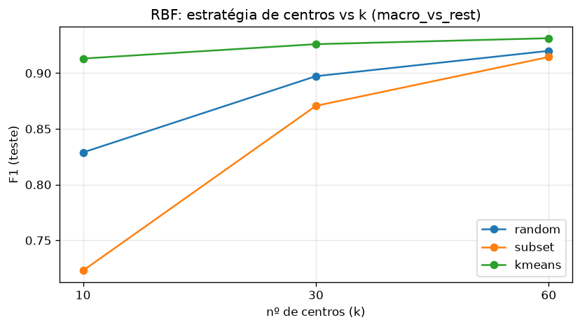
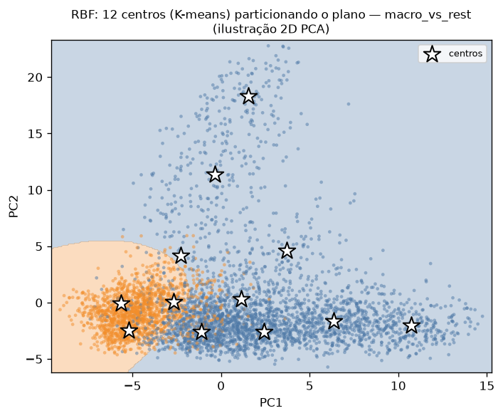

Rede de funções de base radial construída do zero (numpy) para um problema real: classificação binária da coleção pessoal de imagens (features CLIP), 3 tarefas. Foco do enunciado: como a escolha dos centros afeta a classificação.
camada oculta de funções radiais
centros: aleatório · K-means · subset
saída resolvida em forma fechada
φⱼ(x) = exp( −‖x − cⱼ‖² / 2σ² )
ŷ = Σⱼ wⱼ·φⱼ(x) + b| Tarefa (full-dim, seed=42) | Acc | F1 | base |
|---|---|---|---|
| macro_vs_rest | 0.948 | 0.926 | 0.654 |
| has_people | 0.898 | 0.673 | 0.836 |
| screenshot×foto | 0.918 | 0.701 | 0.844 |
k=30 centros (K-means); tabela da seed=42 (ilustração). As tarefas desbalanceadas são mais difíceis para poucas gaussianas. Oficial (multi-seed, 3 seeds): has_people 0.901±0.003 acc / 0.682±0.010 F1; screenshot×foto 0.911±0.006 acc / 0.668±0.030 F1; macro_vs_rest 0.945±0.004 acc / 0.921±0.005 F1.

